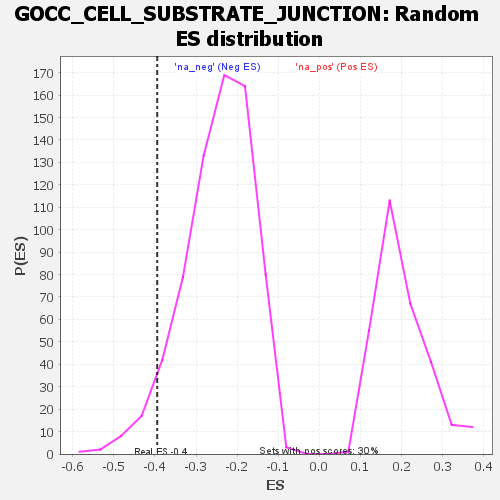

| | | Dataset | genes_ranked_stat_0.1 |
| Phenotype | NoPhenotypeAvailable |
| Upregulated in class | na_neg |
| GeneSet | GOCC_CELL_SUBSTRATE_JUNCTION |
| Enrichment Score (ES) | -0.39442968 |
| Normalized Enrichment Score (NES) | -1.5950439 |
| Nominal p-value | 0.050143268 |
| FDR q-value | 1.0 |
| FWER p-Value | 1.0 |
Table: GSEA Results Summary
 Fig 1: Enrichment plot: GOCC_CELL_SUBSTRATE_JUNCTION
Fig 1: Enrichment plot: GOCC_CELL_SUBSTRATE_JUNCTION
Profile of the Running ES Score & Positions of GeneSet Members on the Rank Ordered List
| SYMBOL | RANK IN GENE LIST | RANK METRIC SCORE | RUNNING ES | CORE ENRICHMENT | | 1 | PLAUR | 120 | -2.722 | -0.0801 | No |
| 2 | PLAU | 203 | -2.813 | -0.1191 | No |
| 3 | PROCR | 468 | -3.164 | -0.3421 | Yes |
| 4 | FHL2 | 500 | -3.213 | -0.3213 | Yes |
| 5 | EPPK1 | 562 | -3.358 | -0.3294 | Yes |
| 6 | FERMT3 | 573 | -3.388 | -0.2839 | Yes |
| 7 | PLEC | 631 | -3.518 | -0.2852 | Yes |
| 8 | LAMA3 | 648 | -3.565 | -0.2429 | Yes |
| 9 | FLNC | 672 | -3.649 | -0.2066 | Yes |
| 10 | ENG | 754 | -3.935 | -0.2260 | Yes |
| 11 | SVIL | 787 | -4.040 | -0.1926 | Yes |
| 12 | HSPB1 | 853 | -4.240 | -0.1903 | Yes |
| 13 | DAB2 | 952 | -5.396 | -0.2033 | Yes |
| 14 | TGM2 | 970 | -6.528 | -0.1131 | Yes |
| 15 | FOCAD | 972 | -6.970 | 0.0010 | Yes |
Table: GSEA details [plain text format]

Fig 2: GOCC_CELL_SUBSTRATE_JUNCTION: Random ES distribution
Gene set null distribution of ES for GOCC_CELL_SUBSTRATE_JUNCTION